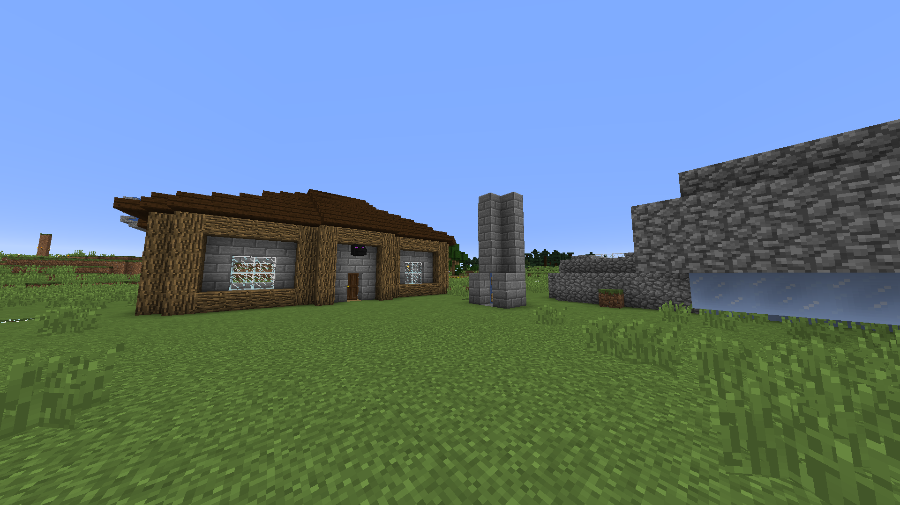

Kalle

Kalle kom in på servern när Jacob la upp världen på datorn hemma istället för att hosta världen över LAN. Kalle satte gång direkt med att bygga sitt första hus. Det var ett stort trähus med stentak som han sedan rev för att bygga detta nya hus som syns på bilden.
Kalles hus
Kalle jobbade väldigt fort med att sätta upp en järnfarm som Jacob bidrog med bybor till, eftersom Jacob hade överflöd då han endast hade nytta av Librarians.
Kalle byggde också en Creeperfarm som gav mycket gunpowder som han behövde till raketer för att flyga med sin Elytra, han var den första som hittade en Elytra på servern. Han sålde även dessa fyrverkerier och kokade laxar som han fick från sin AFK-fiskefarm i sin affär som numera ligger i ån mellan Felix och Jacobs hus.